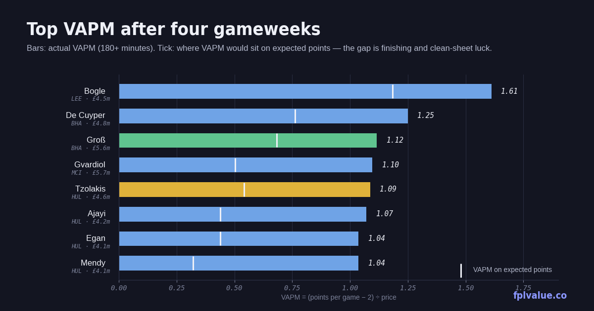

Four gameweeks in: the value table settles down
Doubling the sample from two to four gameweeks changes a lot. Several names from the GW3 report have regressed as predicted, a few have not, and one call went wrong in a way no model could see coming. Minimum 180 minutes throughout. Definitions on the metrics page.

Scorecard: the GW3 calls
Two weeks ago this column made five specific claims. Here is how they've gone, using points over GW3–4 only.
| Call | Player | GW3–4 pts | GW3–4 xPts | Verdict |
|---|---|---|---|---|
| Buy | Isak LIV | 15 | 10.0 | Right. Three goals in four; the 2.09 xGI was real. |
| Hold | Mbeumo MUN | 10 | 8.7 | Right. Returned in both; 3.35 xGI is second only to Fernandes among midfielders. |
| Buy | Thiago BRE | 3 | 5.6 | Wrong so far. Still 0 goals from 2.54 xGI and now −£0.1m. |
| Buy | Barry EVE | 4 | 8.4 | Wrong so far. 3.12 xGI is the best of any forward under £7m; one goal to show for it. |
| Differential | Foden MCI | −1 | 2.2 | Badly wrong. 46 minutes, a red card, suspended until 17 October. |
| Fade | Hull defence | 6–12 | 4.5–7.4 | Wrong. Three clean sheets in four; they keep beating the model. |
Two of six right on outcome, and the two that were right were the two with the biggest underlying numbers, which is at least the pattern you'd want. Thiago and Barry are the same story as before and the same recommendation: they are still creating chances at a rate that should score, and the price on both has dropped. Foden was a minutes risk that turned into a discipline problem; there is nothing to salvage there for a month. The Hull one is worth dwelling on below.
Top VAPM 180+ minutes
| Player | Pos | Price | PPG | VAPM | Pts | xPts | Δ | Own |
|---|---|---|---|---|---|---|---|---|
| Bogle LEE | DEF | £4.5m | 9.25 | 1.61 | 37 | 29.3 | +7.7 | 2.8% |
| De Cuyper BHA | DEF | £4.8m | 8.00 | 1.25 | 32 | 22.7 | +9.4 | 23.5% |
| Groß BHA | MID | £5.6m | 8.25 | 1.12 | 33 | 23.3 | +9.7 | 18.4% |
| Gvardiol MCI | DEF | £5.7m | 8.25 | 1.10 | 33 | 19.5 | +13.6 | 22.7% |
| Tzolakis HUL | GKP | £4.6m | 7.00 | 1.09 | 28 | 18.0 | +10.1 | 10.8% |
| Ajayi HUL | DEF | £4.2m | 6.50 | 1.07 | 26 | 15.4 | +10.6 | 13.6% |
| Egan HUL | DEF | £4.1m | 6.25 | 1.04 | 25 | 15.2 | +9.8 | 9.9% |
Jayden Bogle is the story of the first month. Thirty-seven points from a £4.5m defender is the most of any defender in the game, and unlike almost everyone else on this list it isn't mostly luck: his 29.3 xPts is also the highest of any defender, built on two goals, 1.39 xGI and three clean sheets behind a Leeds defence conceding just 0.67 xGC per 90 while he's on the pitch. He was owned by 2.8% at the time of this snapshot and 74,000 managers bought him this week; the price rise is coming. The one caution is Leeds' fixtures, which turn nasty after the break (Arsenal away, United at home, then a run where only Coventry is rated below 3), so the 29 points he scored in GW3–4 are not the run rate to bank on.
The GW3 report said Hull's 2.00 VAPM would "roughly halve even if they play exactly as well". It has — Ajayi is at 1.07 — but the mechanism was wrong. The model expected the clean sheets to stop; instead Hull kept a third in four games against 5.0 total xGC and are level with Arsenal on three shutouts — and Arsenal have faced 2.7 xGC to Hull's 5.0. At some point a team that keeps conceding chances and not goals is either lucky or has a goalkeeper doing something the model can't see, and Tzolakis — 28 points at £4.6m, 10.1 above expected — is the candidate. Hull face Everton, Fulham and Brentford after the break, all rated 3. The honest position is that the model still says regress, the scoreboard says otherwise, and at £4.1m–£4.6m the cost of being wrong is low enough that holding is fine.
The player to notice is Pascal Groß. Two goals and three assists from 2.27 xGI at £5.6m, and Brighton's set pieces run through him. Nine points above expected is a warning, but 0.57 xGI per 90 for a £5.6m midfielder is elite territory regardless of finishing. Ownership has climbed to 18% with 259,000 transfers in this week.
Top points per million
| Player | Pos | Price | Pts | PPM | xPts | Own |
|---|---|---|---|---|---|---|
| Bogle LEE | DEF | £4.5m | 37 | 8.22 | 29.3 | 2.8% |
| De Cuyper BHA | DEF | £4.8m | 32 | 6.67 | 22.7 | 23.5% |
| Ajayi HUL | DEF | £4.2m | 26 | 6.19 | 15.4 | 13.6% |
| Egan HUL | DEF | £4.1m | 25 | 6.10 | 15.2 | 9.9% |
| Tzolakis HUL | GKP | £4.6m | 28 | 6.09 | 18.0 | 10.8% |
| Davis IPS | DEF | £4.0m | 23 | 5.75 | 20.2 | 6.1% |
Same names, plus one worth a look for anyone who wants an Ipswich defender ahead of their ten-match soft run from GW8: Leif Davis at £4.0m has 1.61 xGI — more than most midfielders at that price — and 15 points over GW3–4 with an xPts to match. He's the sixth-highest PPM in the game at the lowest price the game allows.
Under-performers: points lagging expected
| Player | Pos | Price | Pts | xPts | Δ | xGI | Own |
|---|---|---|---|---|---|---|---|
| Silva BOU | DEF | £5.0m | 10 | 21.7 | −11.7 | 1.12 | 0.4% |
| Thiago BRE | FWD | £7.9m | 5 | 15.0 | −10.0 | 2.54 | 9.7% |
| Barry EVE | FWD | £5.6m | 14 | 22.3 | −8.3 | 3.12 | 6.5% |
| Hill BOU | DEF | £5.5m | 8 | 16.1 | −8.1 | 0.77 | 0.8% |
| Le Fée SUN | MID | £5.8m | 13 | 20.8 | −7.8 | 2.88 | 4.0% |
| Diop IPS | DEF | £4.0m | 8 | 15.3 | −7.3 | 0.15 | 13.8% |
| Rudoni COV | MID | £5.0m | 8 | 15.3 | −7.3 | 1.74 | 0.1% |
The Bournemouth and Ipswich defenders at the top of this table are there for one reason: their teams have kept no clean sheets from defensive numbers that say they should have kept one or two. That's a unit problem and the cheapest way to back it is Silva or Truffert at Bournemouth, whose fixtures ease from GW9, or Davis at Ipswich, who at least scores attacking points while waiting.
The three highlighted rows are the individual cases. Barry has 3.12 xGI in 327 minutes — 0.86 per 90, behind only Haaland among all forwards — and one goal. Thiago has 2.54 xGI and none. Between them they've generated nearly six goals' worth of chances and scored one. Both were the buys in the GW3 report and neither has paid, which is uncomfortable but doesn't change the logic: finishing over four games is noise, chance creation over four games is signal, and both are cheaper than they were. Barry at £5.6m is now the clearest value forward in the game on the numbers. Enzo Le Fée is the new name: 2.88 xGI — fourth among all midfielders — from a £5.8m player at 4% ownership, one goal, and Sunderland's fixtures turn from a 5.0 in GW5 (City away) to Brighton, Bournemouth, Leeds and Coventry. He's the differential to buy at the break.
Methodology: VAPM = (points per game − 2) ÷ price. PPM = points ÷ price. xPts swaps goals, assists, clean sheets and goals conceded for their expected equivalents; appearance, bonus, saves, cards and DefCon are as scored. Δ = points − xPts. All figures from the FPL API after GW4, minimum 180 minutes. Full definitions.